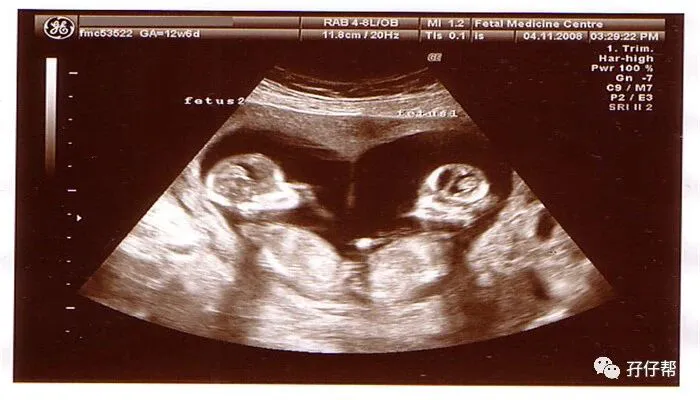
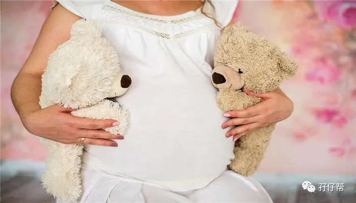
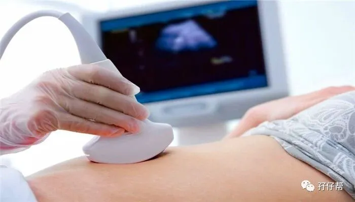
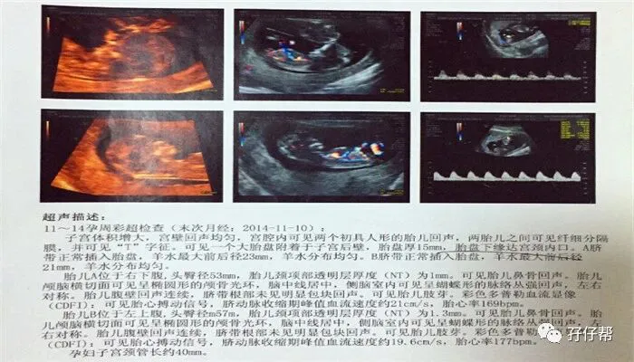
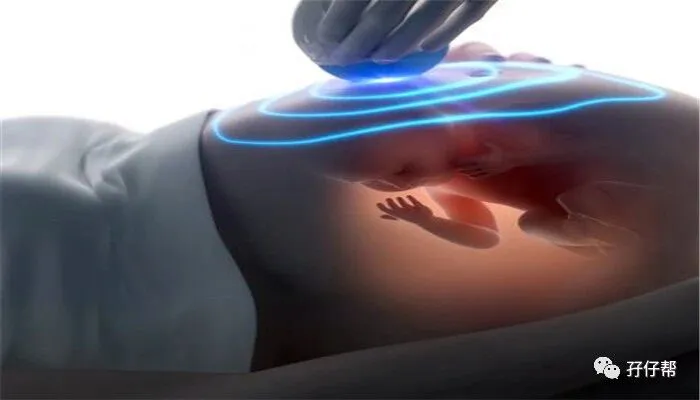
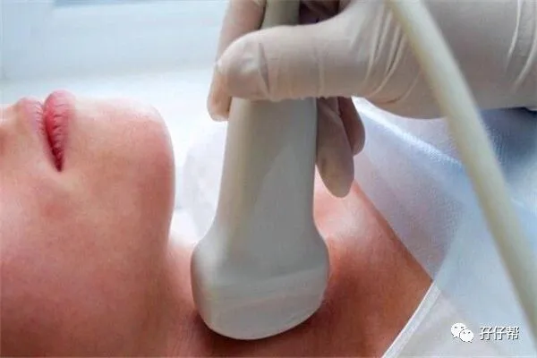
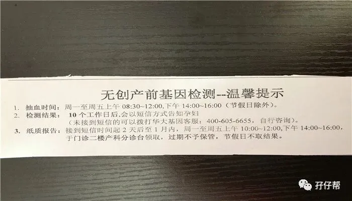

⬆⬆关注孖仔帮，与您分享双胞胎育儿经⬆⬆
文|圆圈妈 一个文思如尿崩的双胎妈妈
图|来自网络
双胎妊娠的第12周
两胎儿的发育情况
孕12周的胎宝宝，大概有银杏那般大，从头到臀部长7.1CM，体重约16.4G，如图所示⏬⏬
孕12周的双胞胎胎儿发育图⏬⏬：
B超孕12周的双胞胎胎儿影像图⏬⏬：
圆圈妈的孕期回忆录
ℹ孕12周，进入孕期第三个月，老娘要去建档啦！
经历过轰轰烈烈的孕吐后，终于进入孕期12周，意味着我可以去建档啦，老娘我终于可以光明正大挂产科啦。
14年2月3日，我的双胎妊娠第一次产检，这天是孕周12W+2D。
庆幸在产检之前把计划生育证明这些重要证件办妥了，建档很顺利！
挂产科号，出示计划生育证明，医院保留了原件，并在母婴手册上盖章已验，之后就可以享受生育医保啦！产检费用建档当日就可以报销了。
我大深圳威武…凭社保卡挂产科号只需要1块钱。
ℹ选建档医院
考虑到经常去产检，我选了距离住址最近的市二医院建档。
市二医院在深圳市也称得上三甲，虽然产科比不上市妇幼和留医部，不过也不会差到哪里去！而且市妇幼很火爆，一号难求，我不想自己挖坑往里跳。
经朋友推荐，约了口碑较好的产科周医生。今日一见，我终于知道她为什么那么受欢迎了，专业！耐心！态度好！超合适像我这样玻璃心的新手妈妈！
✅✅TIPS✅✅:去医院建档的大致流程是：分诊台测量血压---测体重---了解疾病史---找产科医生开单做检查---预约下次产检时间….
双胎是高危妊娠，最好找当地级别最高，口碑最好的医院。
若住址跟建档医院比较远，那要综合考虑下家庭情况，好好斟酌下。双胎产检比较频繁，需要经常在医院和家里来回跑，尤其孕后期行动不便，若路途较远，将会很折腾。（深圳的准妈妈如何产检建档，孖仔帮前几期推文有提到建档攻略，详情请参考《我总结了产检建档经验，让双胞胎准妈妈少进些坑》）
ℹ第一次产检的项目超级多
孕12周的第一次产检，医生给我开了很多检查项目：
NT（彩超）
心电图，
血常规，
尿常规，
孕检生化八项，
空腹血糖，
并性感抗体测定，
产检两对半免费检测，
产前艾滋病/梅毒免费检测，
血型（ABO+RH微柱凝集法），
地贫筛查，
维生素A,D,E测定（脂溶性维生素），
TORCH(lgm)五项，
甲功三项（FT3,FT4,TSH）
总共被抽走了9管血。我也是醉了，长这么大，第一次被抽那么多次血，感觉抽血抽到手麻。
不得不感慨下孕前身体调理的重要性，空腹情况下，我抽完血后还能健步如飞一口气跑上4楼的B超室排队。
双胎B超是双倍的钱，生育险报销了，除了自费项目，其他产检项目都不用自己掏钱。
ℹ孕期第二次做B超：NT
做NT的时候，很紧张，不知道是天气冷还是心理作用，我一直咬着下嘴唇，直打颤！
你懂得，就好像一个开小差的小学生突然间被老师叫到课堂上默写单词，诚惶诚恐，惴惴不安。
最近的一次B超是在孕8周，那是孕期第一次B超，那会儿羊膜囊性质还是待定的，我只知道我怀了双胎，其他的一概不知。
因此，这次NT，有种火烧眉睫的迫切感！
我看到给我做B超的医生工作牌写着某主任，哇哦，这就是双胎的待遇吗？我好像没那么紧张了，可能是有主任级别的医生撑腰。
这位主任边上还站着三个实习医生，一边给我做B超一边给他的学生讲课。
哇哦，这也是双胎的待遇吗？我的双胎妊娠被当作教学案例了。
听到他们叽叽咕咕不知道在说啥，“两个大小差不多”“这里…要注意两胎儿的羊水”“留意宫颈长度”….
我就听着不说话，出奇地淡定，反正有问题，医生会比我更紧张！
不知道是主任医生要讲课还是我双胎真的要做那么久的NT，我足足躺了40分钟，终于得到医生允许坐起来了。
“你是单绒双羊，比较危险，注意定期产检，最好两个星期做一次B超！”
全程跟我0交流的那位主任医生突然很郑重地告诉我。
“嗯，哦，好，知道了，谢谢医生…..”
我刚才淡定的心态荡然无存，被那个“单绒双羊”“比较危险”吓蒙了，反射性地跟医生道谢后，连滚带爬走出了B超室。
我只觉得掉进冰窖似的全身发冷，只哆嗦，嘴唇都被我咬出很深的牙印子。苍天啊，我只是怀孕了而已，怎么就危险了呢？
据之前了解的信息，单绒双羊可是TTTs的重灾区啊！我的NT报告单如下图（1）⏬⏬
下图（2）⏬⏬
在圆圈爸的搀扶下，我拿着所有检查报告单找周医生问结果。
NT 结果挺好的，只是有一个宝宝胎心偏快，177次/分。胎盘目前处于前置状态，两胎宝宝孕周相差两天。
✅✅TIPS✅✅：做NT 不用憋尿。早孕期的胎儿胎心一般会偏快，到了中孕期会稳定。我孕16周产检，两胎心检查正常，而且这个会受到一些客观因素的影响，比如孕妇心情紧张或者处于饥饿状态等。
所以产检的时候，放宽心，别紧张！又不是真的被拉去“打靶”！怕啥！
爸爸群有准爸爸拿两胎儿的胎心率作对比，这没啥意义。即便是单绒单羊的超亲密双胎手足，他们的胎心也是有差异的，只要不是太高太低，正常范围即可（120--160次/分）
胎盘低置和胎盘前置是两个不同的概念，其实你躺不躺，跟胎盘有没有长上去，没多大关系。如果没有任何不适，不需要为了胎盘长上去而绝对卧床。
ℹ第一次产检化验结果
血压：正常，111/75 mmHg
体重：54公斤，上升了2公斤（孕前是52公斤）
血值：正常，没有贫血122G/L
尿常规：正常
其中甲功三项和心电图有异常，周医生建议我挂心内科和综合内科复查。
综合所有产检结果，医生评估了我的孕育情况：目前的妊娠状态良好，暂无异常。
B超确诊我是单绒毛膜双羊膜囊双胎妊娠，两胎儿共用一个胎盘，是同卵双胎中最常见的一种，风险系数仅次于单绒单羊妊娠。
“双胎就是高危，同卵就是更高危，建议你下次找副高以上的产科医生做产检！”
她在我的《母婴手册》上狠狠盖上“高危妊娠”的红章还补充道。
（纳尼？这是要被医生抛弃的节奏吗？）
由于双胎，做不了唐氏筛查，四维也预约失败，周医生建议我们再去北大医院挂产检诊断科咨询。
✅✅TIPS✅✅：我的心电图提示ST段改变，甲功三项的促甲状腺激素偏低。
我觉得导致ST段改变是因为我刚爬完楼梯，就跑去做心电图，心里太紧张了。
而且我平时身体一直很棒，应该没有心脏问题，似乎大多数孕妇在孕期都有不同程度的心电图异常，如ST段改变和窦性心律不齐。
综合考虑，我没有遵医嘱复诊。
EKG（心电图）即使是怀孕前身体健康的孕妇，怀孕之后做心电图也会出现“ST段改变”，和提示“心脏缺血”等改变。只要怀孕之前没有过心脏病，孕期心功能正常，就不必担心。如果有“心脏不适”的症状，还是建议做24小时心电图检查来除外异常。（来源：段涛大夫《怀孕生孩子那些事 之 为你解读产检化验检查报告》）
至于甲功三项，我在北大医院咨询唐筛时，顺便挂了内分泌科的号，复查甲功三项。
看医生很犹豫的样子，说得也很委婉，我感觉自己应该问题不大，看网上大多数的孕妇都反应促甲状腺激素偏低。
医生建议做甲状腺功能彩超，我拒绝了，我连药都没有去拿，就把这件事情抛诸脑后了。
现在想想，我这心是有多大啊！好在我真的没啥事。
我这是反面教材，孕妈们不要效仿，还是根据自己的实际情况，三思而后行哈！
ℹ去北大医院咨询唐筛
建档做完NT的第二天，我们去了北京大学深圳医院（简称北大医院）的产前诊断门诊，希望可以做唐筛，结果还是被告知，唐筛只针对单胎，双胎不能做，理由是双胎血液指标和单胎不同,不能准确鉴定，做了也没有意义。
在医生的建议下，我做了无创DNA检测---华大基因，费用是800多。
那是我第一次听说“华大基因”，“无创DNA ”，我不知道那是啥，我来不及去了解，我们都一脸懵逼，不知道要不要做这个检查，拿着协议书，在门口纠结了很久。
我和圆圈爸你看看我，我看看你，无助极了！最后…就签了协议书！然后缴费抽血化验等通知！
我们签了协议之后，交给分诊台，收到一回执和一张写着“温馨提示”的小字条。
10个工作日后会用短信方式通知孕妇，如图所示⏬⏬：
值得庆幸的是，在北大医院，我顺利预约到孕中期的四维彩超。
就酱…我的双胎妊娠第一次产检，一脸懵逼地过关了！从此，我行走在刀尖上的双胎孕期开始了……
✅✅TIPS✅✅: 双胞胎的唐筛结果不准确，建议大家先去了解下啥是唐筛和唐筛的筛查原理，搞明白之后就知道为什么双胎不建议做唐筛。
一句话，参考指标不一样，做了有啥意思？要是搞出个高风险，可怎么办！你管还是不管？
当你确定要做无创DNA，请注意下无创DNA的最佳日期，14周—24周之间。
┈☞未完待续☜┉
上期推文:
连载（一）|圆圈妈双胞胎怀孕过程第4周
连载（二）|圆圈妈双胞胎怀孕过程第5周
连载（三）|圆圈妈双胞胎怀孕过程第6周
连载（四）|圆圈妈双胞胎怀孕过程第7周
连载（五）|圆圈妈双胞胎怀孕过程第8周
连载（六）|圆圈妈双胞胎怀孕过程第9周
连载（七）|圆圈妈双胞胎怀孕过程第10周
连载（八）|圆圈妈双胞胎怀孕过程第11周
下期预告：
连载（十）|圆圈妈双胞胎怀孕过程第13周
本文系圆圈妈sgguy-com原创，来源于孖仔帮，专注双胞胎孕期育儿经验分享，著作权归孖仔帮所有。
---☜✪ The end ✪☞---
关于这个号
谢谢关注！我是圆圈妈
85后，全职双胎妈妈
家有孖仔两枚，圆圈&圈圈
双胞胎育儿公众号：孖仔帮
旨意分享双胞胎育儿经验帮助双胞胎家庭
有经验可循
有组织可靠
希望我的经验对您有所启发
期待与您一起共享双胞胎育儿经
孖仔帮目前有5个微信社群
孕期群，喂养群，闲置群，双胞胎爸爸专属群，双胞胎教育群
如需入交流群，请+圆圈妈的微信号sgguy-com,或扫描下方二维码
由圆圈妈邀请入群
添加请注明：
宝妈/宝爸，孕期/已生
长按二维码，加圆圈妈好友
往期精彩文章回顾：
105：同卵双胞胎的天敌--双胞胎输血综合征
106：官宣：双绒双羊，单绒双羊，单绒单羊傻傻分不清？一篇消除你所有疑问
215：双胎子宫日记系列|（下）你看不看？双胞胎妈妈直播剖腹产全过程
219：双胞胎准爸爸的生存指南：不做猪一样的队友，活着出来喜当爹
306：真人示范！双胞胎妈妈高难度喂母乳技巧
312：为出生就进NICU的双胞胎新生儿，我必须告诉你这5个通关秘籍
407：嘿！双胞胎孩子的亲子阅读攻略，要来一份吗（1--2岁阶段）
605：看过这份最简单的双胞胎宝宝用品囤货清单，其他的都是将就
608：听说...你在找双胞胎育儿神器，这事儿我熟！
723：双胎妈妈，为什么我不建议你这样坐月子...
我猜你肯定喜欢看上面的文章，对不对嘛？关注孖仔帮，回复文章前面的数字编号即可阅读。
长按识别二维码关注我们
更多孖仔帮双胞胎原创育儿文章，
请猛戳 "阅读原文"
或者直接上圆圈妈的个人博客。
博客链接↓↓
https://www.sgguy.com/twinsbang
#重磅互动#
评论区聊一聊
你希望圆圈妈写什么育儿经验干货？
随便提，万一下篇就写了呢？







